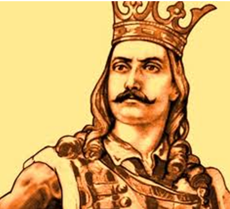
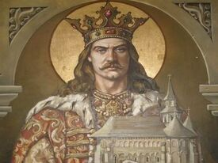

Domnia lui Stefan cel Mare
 
Descrierea, înfățișării, caracterului și trăsăturilor de personalitate ale lui Ștefan cel Mare este
o intrepindere dificilă, având în vedere că nu s-au păstrat izvoare documentare interne din epocă, iar
multe din cele externe se bazează pe relatări orale, mai mult sau mai puțin credibile, și interpretate
funcție de contextul cultural local și interesele pe care țara respectivă le avea față de Moldova.
Unele dintre scrierile contemporane lui au un vădit caracter apologetic, fiind pline de cuvinte de
laudă și alcătuite, foarte probabil, din dorința vădită de a-l linguși pe Ștefan, în vederea obținerii
unor foloase. Alte caracterizări, scrisese după moartea lui, au preluat ideile acestora, într-un mod
selectiv, în încercarea de a crea un erou idealizat, care să servească drept model pentru deșteptarea
sau cultivarea unei conștiințe naționale a românilor.
„Sunt, însă, și caracterizări provenind din spații și epoci diferite care îi atribuie, în chip
repetat, aceleași însușiri, ceea ce înseamnă că ele îi erau cu adevărat proprii.”
Lui Ștefan cel Mare românul îi atribuie tot ce-i pare curios,mare, vitejesc și chiar neînțeles
în pământul nostru. Orice cetate, orice zid, orice val, orice șanț, întreabă-l cine le-au făcut;
el îți va răspunde: Ștefan cel Mare. Orice pod, orice biserică, orice fântână, orice curte sau
palat vechi, el le va raporta eroului său. Orice bunătate,
orice așezământ a căruia rămășițe se mai trăgănează până astăzi, orice legiuire ominească,
orice puneri la cale înțălepte Ștefan vodă le-au urzit, îți va zice el, și iar Ștefan vodă. În sfârșit, acest domn, pentru
moldoveni rezumă toate faptele istorice, toate monumentele, toate isprăvile și instituțiile făcute în cinci veacuri, de atâția
stăpânitori.
El era religios și crud in același timp, două însușiri, ce nu s-au exclus niciodată una pe alta, deși religia creștină
recomandă blândețea ca virtutea ei supremă. Despre modul în care s-au manifestat ambele aceste însușiri s-au păstrat multe mărturii.
Pentru caracterul evlavios și pios stau mărturie atât numărul mare de lăcașuri de cult construite cât și pictura bisericească și cărțile
de cult cu care acestea au fost înzestrate. La rândul lor, episoadele de cruzime, uneori extremă, apar și ele pe timpul îndelungatei sale
domnii: arderea orașului Brăila, omorârea solilor tătari, omorârea fără judecată a unor boieri, inclusiv a doi dintre cumnații săi etc.
Deși acest tip de fapte reprezentau de multe ori „normalitatea” prin care suveranii creștini sau musulmani din epocă își exercitau dreptul
de viață și de moarte asupra supușilor, ignorarea de către aceștia a unor cutume privind protecția populației necombatante, protecția
solilor sau dreptul la judecată, era condamnată de către societate, chiar dacă era justificată de suverani prin necesități dinastice,
politice sau militare.
Personalitatea